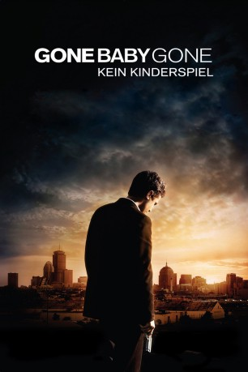

Auszeichnungen: für 1 Oscars nominiert
 gesehen am 03.02.2016
gesehen am 03.02.2016Alternativ: Gone Baby Gone
Auszeichnungen: für 1 Oscars nominiert gesehen am 03.02.2016
 
 IMDB-Wertung: 7.7 / 10
IMDB-Wertung: 7.7 / 10  Metascore:
Metascore: 
In einem der ärmeren Viertel Bostons kommt es zu einem tragischen Vorfall: die 4-jährige Amanda McCready verschwindet spurlos aus der eigenen Wohnung, in der sie mit ihrer drogenabhängigen Mutter Helene wohnt. Diese vernachlässigte sie schon seit geraumer Zeit und auch an diesem Abend vergnügte sie sich mit ihrem Liebhaber Ray in einer Bar, anstatt auf ihr Kind aufzupassen. Amandas Onkel Lionel und seine Frau Beatrice schalten zusätzlich die beiden Privatdetektive Patrick Kenzie und seine Freundin Angie Gennaro ein, die die Polizei, unter der Führung von Jack Doyle, bei der Suche unterstützen sollen. Erst einige Informationen, die Helene Patrick und Angie zukommen lässt, der Polizei aber verschwieg, bringen sie auf eine erste Spur. Gemeinsam mit den Detectives Bressant und Poole verfolgen sie den Drogendealer Cheese, dem Helene und Ray Geld klauten. Allerdings ist das erst der Anfang der Ermittlungen...
Jahr: 2007
Dauer: 113 Minuten
FSK: 16
Land: USA Studio: MiramaxTonspuren: DTS - ,
Untertitel: Deutsch, Englisch,
Auflösung: 1080p (1920x1038) Größe: 16486 MB
Genre: Thriller, Drama, Krimi, Mystery
Regisseur:  Ben Affleck
Ben Affleck
Drehbuch: Ben Affleck, Aaron Stockard, Dennis Lehane
Soundtrack: Harry Gregson-Williams
Darsteller:
 Casey Affleck als Patrick Kenzie
Casey Affleck als Patrick Kenzie Michelle Monaghan als Angie Gennaro
Michelle Monaghan als Angie Gennaro Morgan Freeman als Jack Doyle
Morgan Freeman als Jack Doyle Ed Harris als Remy Bressant
Ed Harris als Remy Bressant John Ashton als Nick Poole
John Ashton als Nick Poole Amy Ryan als Helene McCready
Amy Ryan als Helene McCready Amy Madigan als Bea McCready
Amy Madigan als Bea McCready Titus Welliver als Lionel McCready
Titus Welliver als Lionel McCready Michael Kenneth Williams als Devin
Michael Kenneth Williams als Devin Edi Gathegi als Cheese
Edi Gathegi als Cheese Mark Margolis als Leon Trett
Mark Margolis als Leon Trett Slaine als Bubba
Slaine als Bubba Matthew Maher als Corwin Earle
Matthew Maher als Corwin Earle Jay Giannone als Steve Penteroudakis
Jay Giannone als Steve Penteroudakis Robert Wahlberg als Interrogating Officer
Robert Wahlberg als Interrogating Officer Tom Kemp als Police Captain
Tom Kemp als Police Captain Dale Place als Newscaster
Dale Place als Newscaster Celeste Oliva als Field Reporter
Celeste Oliva als Field Reporter Lewis D. Wheeler als Field Reporter
Lewis D. Wheeler als Field Reporter Chemi Che-Mponda als Restaurant Customer , uncredited
Chemi Che-Mponda als Restaurant Customer , uncredited Mackenzie Hawe als Neighborhood Child , uncredited
Mackenzie Hawe als Neighborhood Child , uncreditedDatei: X:\2007(G-M)\Gone Baby gone - Kein Kinderspiel (2007, FSK16, 1920x1038).mkv seit 03.02.2016
Festplatte: HD 2007(A-Z)-2008(A-F)
 Es gibt insgesamt 64 Filme in der Gruppe '2007(G-M)'
Es gibt insgesamt 64 Filme in der Gruppe '2007(G-M)'